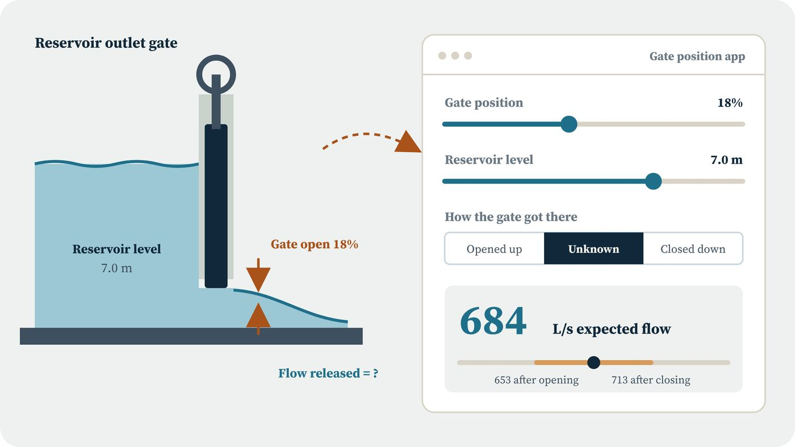

Irrigation | Decision support
Forecasting demand for a micro-reservoir
Operators cannot see irrigation demand coming, so they keep a small pond full and the surplus spills. I built a forecast that tells them how much water to request 4 to 24 hours ahead, with a dam operations simulation and a gate position app on top.
At a 4 hour horizon the forecast error is 45.5 L/s (RMSE), validated on two held-out seasons, and could save about 479,000 m³ of spills a season.
In class: the pond's stage-storage curve and mass balance make a ready-made reservoir routing exercise for hydraulics students.
